Comece a utilizar Computação em Nuvem hoje!
Welington Veiga / @welingtonveiga
Sobre mim...
E você?
Afinal, o que é a Nuvem?
"Computação em nuvem é o fornecimento de serviços de computação – servidores, armazenamento, bancos de dados, rede, software, análise e muito mais – pela Internet (“a nuvem”)"
Microsoft
Afinal, o que é a Nuvem?
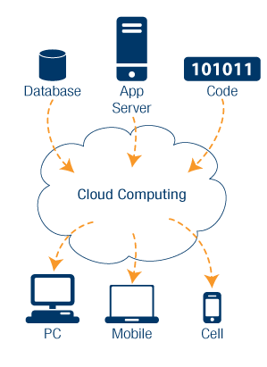Serviços disponíveis na núvem...
Onde está a núvem?
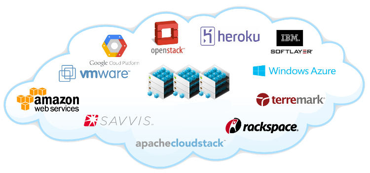Isso não é a mesma coisa que virtualização?
Não!
Infraestrutra como Serviço
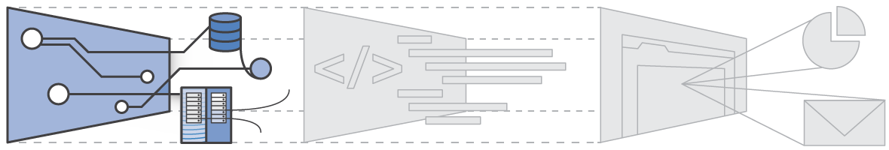- IaaS - Infraestructure as a Service
- Recursos como espaço em disco, rede, processamento.
- Alto nível de flexibilidade.
- Gerenciamento de assemelha a infra local.
Plataforma como Serviço
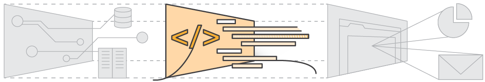- PaaS - Platform as a Service
- Não é necessário se preocupar com o hardware ou SO
- Serviços a partir do qual se constrói as Aplicações.
- Computação, armazenamento, rede gerenciados.
Software como Serviço
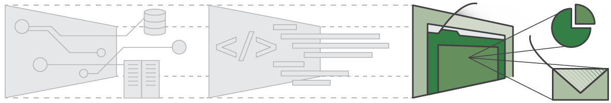- SaaS - Software as a Service
- Produtos completos para se integrarem às soluções.
- Não pe necessário saber nada sobre a infraestrutura subjacente.
- Webmail
Por que utilizar cloud computing na minha próxima aplicação?
Motivo 1: Custo
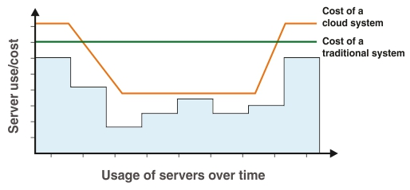Motivo 2: Velocidade
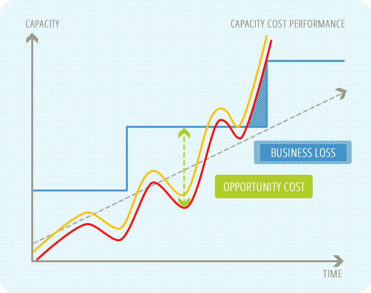Motivo 3: Escalabilidade
Motivo 4: Produtividade

Motivo 5: Desempenho
Motivo 6: Confiabilidade
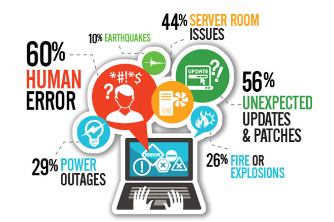Escalabilidade Vertical x Horizontal
Te convenci?
AWS - Amazon Web Services


Amazon Elastic Compute Cloud - EC2
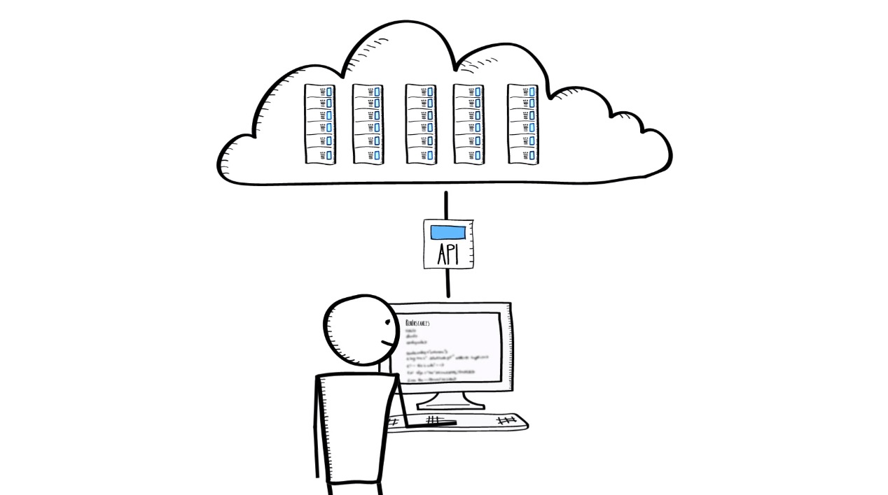- Diferentes níveis de recursos de hardware.
- Pagamento por utilização, redimensionamento.
- Escalabilidade infinita*.
Auto Scaling

Elastic Load Balancer- ELB
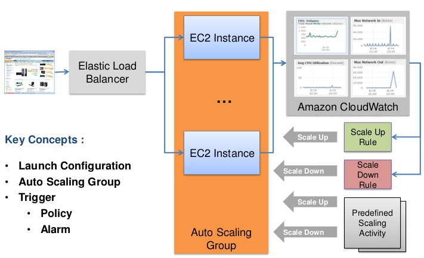Simple Storage Service - S3
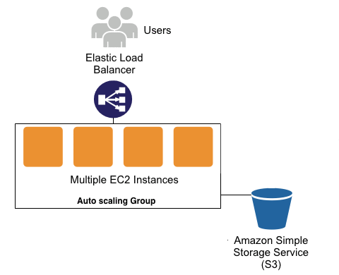Relational Database Service - RDS
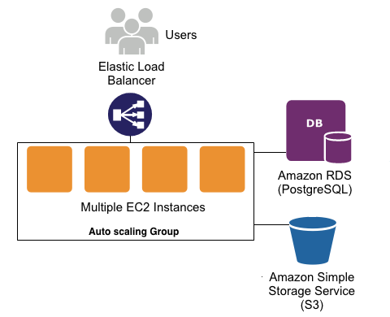CloudFront
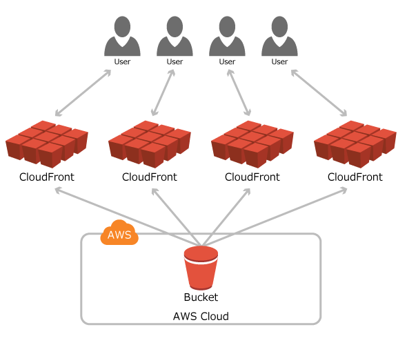Outros serviços...
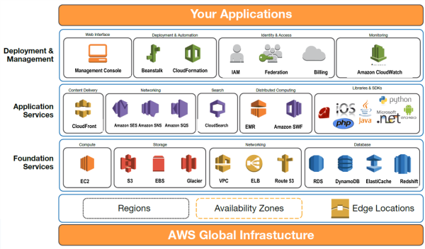Outros provedores...
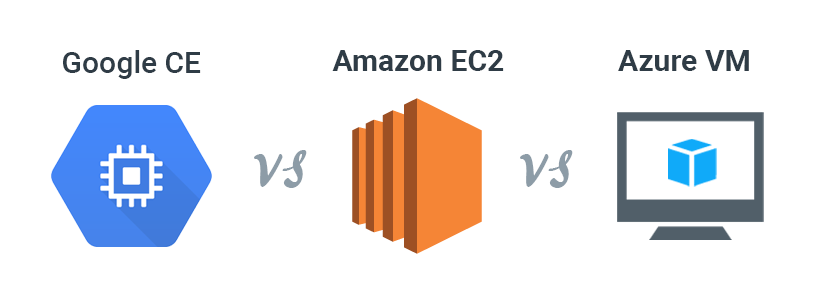Estudo de Caso
- Um novo cliente para um sistema legado.
- O sistema iniciado em 2004, e sem equipe dedicada há 2 anos.
- Média de usuários era de 500 usuários, no máximo 1000.
- O novo cliente possuia 80000 funcionários
- Origados a utilizar o sistema.
- Mensalmente
Estudo de Caso
O que fazer?
- Aumentar o hardware?
- Refatorar o código?
- Ter fé?
Estratégia:
- Realizar testes de carga e coletar métricas.
- Refatorar apenas pontos específicos.
- Adicionar camadas de cache.
Os resultados não foram bons o bastante....
Estudo de Caso
Cenário
- JBOSS 4
- Java EE
- Cache em memória.
- Arquivos em disco.
- 16GB de RAM e 4 núcleos...
Estratégia:
Vamos clusterizar!
Performance versus Escalabilidade
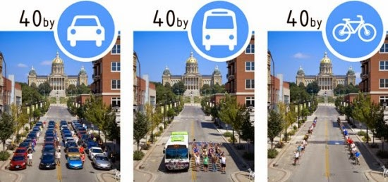Como era nossa infraestrutura?
Passo 1: Precisamos rodar máquinas menores para clusterizar.
Passo 2: Remover Server Affinity I.
Passo 2: Remover Server Affinity II.
Passo 3: Enfim o cluster
Passo 4: Adicionando elasticidade ao Cluster
Eficiência de custo!
Benefícios Adicionais
- Simplificação da operação de plataforma.
- Facilitação dos processos de backup.
- Possibilidade de realizar deploys RED-GREEN.
- Custo baixo na maior parte do mês.
- Possibilidade de escalar além dos 80 mil usuários sem alterações.
Limitações
- Ainda temos pontos únicos de falha.
- SGBD passa a ser um limitador - replicação de leitura.
- Maior complexidade no desenvolvimento.
- Relatórios!!!
Lições Aprendidas
- Não é possível possível conduzir um projeto baseado em hipóteses.
- Testes de carga com objetivos pré-definidos.
- Ferramentas de monitoramento da aplicação e dos recursos.
- É preciso desenvolver e incentivar o conhecimento em Sistemas Distribuídos.
- Computação em Núvem não é assunto para grandes Players!